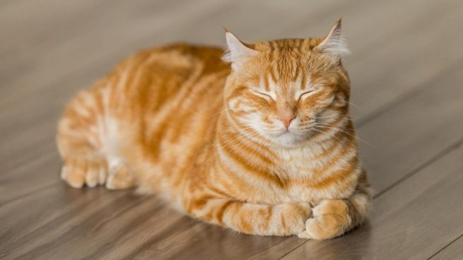
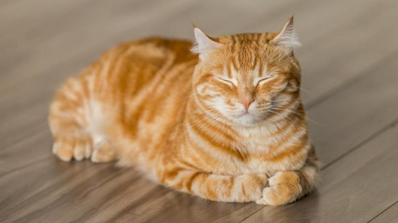

Felis silvestris catus

El gato doméstico (Felis silvestris catus), llamado más comúnmente gato, y de forma coloquial minino, michino, michi, mizo, miz, morroño o morrongo, y algunos nombres más, es un mamífero carnívoro de la familia Felidae. Es una subespecie domesticada por la convivencia con el ser humano.
El nombre actual en muchas lenguas proviene del latín vulgar catus. Irónicamente, aludía a los gatos salvajes, mientras que los gatos domésticos, en latín, eran llamados felis.
Junto al perro, es el animal doméstico más popular, como mascota, como ayuda en la lucha contra roedores o ambas cosas.
Te invito a que entres a Detalles para conocer más a fondo sobre este peculiar animal.
Sitios relacionados
Imágenes
Puedes entrar a la Galería para ver más
 
